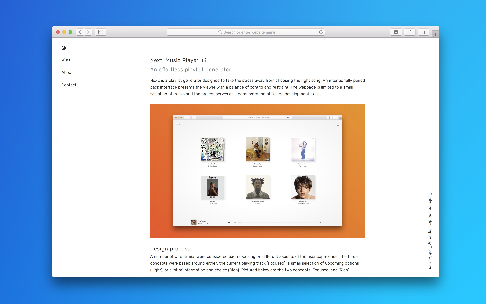

Personal Portfolio
Josh Warner v.1
An early iteration of this digital portfolio
The self written brief for this project was to create a low maintenance portfolio that reads like a blog. This portfolio is home to a selection of works that show experience in web design and development and conveys a hint of personal taste without distracting from any content.

Published: January 2018
The Design Process
Moving away from the previous portfolio it was clear what had to change. Text needed to be legible and light with plenty of breathing room, images should be bold, and the multi-page site must be simple to navigate. Rubik was the font of choice as it had just enough character without being conventional or overused. The slightest touch of green accents an otherwise plain colour palette of black, white and grey.
The Development Process
The site is static and relies only on simple HTML, CSS and jQuery. Almost all motion is generated using CSS transitions which means the UI is consistent should jQuery fail to load. With accessibility in mind each page (other than index) has been wrapped in an article tag which means browser readers easily recognise the main content.
Article page: Centered for legibility and easy scaling